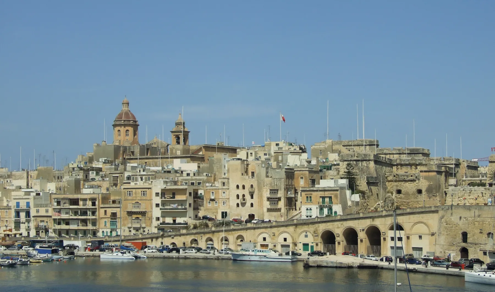

Atmosphere does not prove step-free access, easy parking, quietness or a short route to a particular entrance.

IL-BIRGU · VITTORIOSA · MALTAHarbour city.
Harbour city.
Four contexts.
Birgu is its own locality inside the wider Three Cities story. Its inner streets, waterfront, Fort St Angelo headland and landward approaches should never be flattened into one view, one walk or one ferry promise.
ONE COUNCIL, DISTINCT SETTINGS
Start with the exact street, not “Three Cities”.
The Address Registrar lists Il-Birgu as a standalone locality and council in the Port Region. Birgu is also widely known as Vittoriosa. Bormla/Cospicua, L-Isla/Senglea and Kalkara remain separate localities even when a map or harbour view places them together.
The harbour setting is distinct from the interior. A locality image cannot promise a waterfront home or view.
The fort is a specific heritage site, not a synonym for every Birgu address or an always-open public shortcut.
Use the registered locality and real street network. A shared urban seam does not merge neighbouring councils.
EVERYDAY CHECKS
Three live channels before relying on a detail.
These public sources establish council, health-service and transport context. They do not freeze office hours, appointments, routes, departures or the path from an unspecified home.
Birgu Local Council
Use the council's live pages for current administration, notices, payments and permits rather than copying mutable office details into evergreen copy.
Open the council site ↗Cospicua Health Centre catchment
Primary HealthCare expressly includes Vittoriosa in this service area. Eligibility, clinics, appointments and the actual journey remain live checks.
Open the health-centre page ↗Routes, stops and disruptions
Confirm the exact stop, direction, date and any diversion with Malta Public Transport. This preview makes no fixed route or journey-time claim.
Check routes and timetables ↗READ THE HARBOUR BY MODE
Water is a setting and a transport boundary.
Birgu's waterfront is real, but it does not make every property waterfront and it does not turn Grand Harbour into a walking route. The scheduled Three Cities ferry uses Cospicua as its terminal.
Birgu origin → Cospicua terminal
A future journey needs an exact verified origin and real routed street geometry. No straight connector is acceptable.
Cospicua → Valletta
This is a separate operator-confirmed ferry segment. Current operation, schedule, fare and access stay with the live ferry source.
Never disguise a gap
If the land or ferry geometry cannot be verified, show no route rather than an illustrative line over water.
HERITAGE WITH CURRENT ACCESS
Fort, palace and museum are separate visits.
Heritage Malta establishes the sites and their Birgu context. Opening, admission, partial access, events and temporary closures must always be checked on the live pages.
Fort St Angelo
A fortified destination at Birgu's harbour edge. It is not a locality-wide accessibility or view promise.
Open Heritage Malta ↗Inquisitor's Palace
A distinct museum site whose live page should control present access and visitor information.
Open Heritage Malta ↗Malta Maritime Museum
The official page currently reports a temporary closure for major transformation. Recheck before every release or visit.
Temporary closure recorded 4 Nov 2026Open the current museum page ↗
FOOD WITHOUT A “BEST OF” CLAIM
Three register anchors, not recommendations.
The Malta Tourism Authority's exact Birgu searches returned these records when checked. The register supports the recorded name, category, licence reference and address only; confirm current trading, menu, price, accessibility and booking directly.
Blue House Restaurant
A verifiable Birgu restaurant-register record, not a quality ranking or property-specific walking claim.
BOA Restaurant
The Ix-Xatt tal-Birgu / Grand Harbour Marina address establishes waterfront context only.
Be Birgu
This snack-bar record is a civic-centre address anchor, not evidence of present hours or proximity to a home.
Open Birgu and its immediate harbour context only when useful.
The map is a neutral OpenStreetMap orientation around Il-Birgu. It deliberately marks no listing, council boundary, route, distance, journey time, ferry line or guaranteed view and loads only after your click.
Address Registrar · Birgu Local Council · Primary HealthCare · Malta Public Transport · Valletta Ferry Services · Fort St Angelo · Inquisitor's Palace · Malta Maritime Museum · MTA restaurant search · MTA snack-bar search. Volatile transport, ferry, access, health and operating details require a fresh check.
Private editorial preview. No ranking, fixed opening hour, property pin, boundary, guaranteed view, parking claim, accessibility promise, route, distance or journey time is implied.